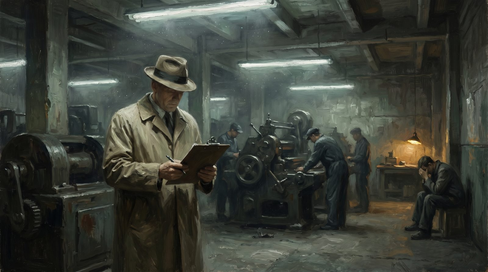

De toezichthouder die niets ziet
Inspectie zonder oergevoel is administratie van het verleden
Praktijk · 11 min lezen

De AFM stuurt een brief. Zeventien pagina's. Vragen over interne procedures, governance-documentatie, het compliance-handboek, de vastlegging van klachtenprocedures, de protocollen voor belangenverstrengeling. De financieel adviseur die de brief ontvangt werkt met zijn vrouw een praktijk, bedient tweehonderd klanten die hij allemaal persoonlijk kent, heeft in twintig jaar nooit een klant benadeeld, en besteedt nu zes weken aan het samenstellen van een dossier dat niemand ooit zal lezen. Twee straten verderop zit een kantoor dat structureel slechte hypotheken verkoopt, de klachten intern laat verdwijnen, en een compliance-afdeling heeft die de correspondentie met de AFM glanzend verzorgt. Dat kantoor heeft nooit een probleem gehad met de toezichthouder.
Dit is niet toevallig. Dit is hoe het systeem werkt.
Wat een toezichthouder was bedoeld te zijn
De inspecteur die vroeger de fabriek binnenkwam, de bankdirecteur die onverwacht een bijkantoor bezocht, de ambtenaar die in de keuken van het restaurant liep zonder aankondiging — die mensen deden iets simpels en onvervangbaars. Ze liepen erin. Ze keken. Ze voelden wie de boel goed had voor elkaar en wie een show opvoerde. Ze hoorden aan de toon van de medewerker of er iets niet klopte. Ze zagen aan de gezichten wat de boeken niet zeiden.
Toezicht was ooit een ooggetuige. Iemand die met eigen ogen en eigen oordeel vaststelde of de werkelijkheid overeenkwam met wat werd beweerd. Dat vroeg om mensen met ruggengraat, die bereid waren een conclusie te trekken, die een oordeel durfden te vellen dat kon worden aangevochten.
Dat vroeg om mensen met ruggengraat, die bereid waren een conclusie te trekken, die een oordeel durfden te vellen dat kon worden aangevochten.
Het toezicht is iets anders geworden. Het is een administratief systeem dat controleert of de documentatie aanwezig is. Of de procedures zijn vastgelegd. Of de zelfevaluatie is ingeleverd. Of de verbeterplannen tijdig zijn ingediend. Of de audit-rapporten worden aangeleverd conform de voorschriften. Het toezicht meet of de papieren kloppen, niet of de werkelijkheid deugt.
Hoe een schandaal meer papier oplevert en minder oordeel
Na elk groot schandaal — de toeslagenaffaire, Vestia, de SNS-nationalisatie, de aardgaswinning in Groningen, de misstanden bij jeugdzorginstellingen — komt er altijd hetzelfde antwoord. Er worden Kamervragen gesteld. Er komt een onderzoekscommissie. Die commissie stelt vast dat er onvoldoende toezicht was. Vervolgens wordt het toezicht uitgebreid. Er komen meer rapportageverplichtingen. Er komen nieuwe criteria waaraan moet worden voldaan. Er komen extra controlemomenten, extra inspectietermijnen, extra documentatieverplichtingen.
En dan is iedereen blij. Er is daadkrachtig opgetreden. Het systeem is verbeterd. De politiek heeft laten zien dat het haar ernst is.
Wat niemand zegt, is dat het volgende schandaal niet wordt voorkomen door die extra formulieren. Het volgende schandaal groeit juist in de schaduw van de compliance-drukte. Want terwijl de eerlijke kleine instelling zijn handen vol heeft aan de nieuwe rapportageverplichtingen, heeft de slimme grote instelling gewoon een afdeling voor de afhandeling ervan. Die grote instelling is op papier altijd in orde. Haar compliance-medewerkers weten precies wat de toezichthouder wil zien, ze leveren het tijdig aan, en ze houden de werkelijke gang van zaken ver uit het zicht van de mensen die controleren.
De toeslagenaffaire is hier het schrijnendste voorbeeld. De Belastingdienst hield toezicht op zichzelf via interne controles, rapportages, audits, managementletters — allemaal conform de voorschriften. Tegelijk vernietigde hij systematisch gezinnen op basis van een algorithme dat etnische herkomst als risicofactor gebruikte. Alles was gedocumenteerd. Niets was gezien.
Vestia en de banken: het patroon herhaalt zich
Bij Vestia, de woningcorporatie die met derivaten speculeerde en uiteindelijk de hele sector meesleurde in een sanering van vijf miljard, was het CFO die de deal deed volkomen anoniem voor de toezichthouder. Het Centraal Fonds Volkshuisvesting controleerde jaarrekeningen, governance-verklaringen, bestuursrapportages. De derivatenportefeuille groeide jarenlang ongestoord, want ze stond weliswaar in de stukken, maar in een format dat geen gewaarschuwd menselijk oordeel opriep — alleen maar een tabel die op zichzelf niet verontrustend leek als je alleen op de tabel keek.
Wie door de gangen van Vestia had gelopen, had het gevoeld. De medewerkers die hun mond niet open mochten doen. De cultuur van één man die alles bestifte. De deals met tussenpersonen waarvan iedereen wist dat ze niet klopten maar waarvoor niemand verantwoordelijk was. Dat zie je als je kijkt. Dat staat nooit in een jaarrekening.
Bij de banken was het precies zo voor de crisis van 2008. De toezichthouders in alle betrokken landen — DNB in Nederland, de FSA in het Verenigd Koninkrijk, de Fed in Amerika — hadden toegang tot alle stukken. Ze hadden ze ook gelezen. De kapitaalratio's zagen er op papier acceptabel uit, want de modellen waarmee de risico's werden berekend waren goedgekeurd door diezelfde toezichthouders. Niemand had zijn neus gevolgd. Niemand had gezegd: dit klopt niet, ik voel dat hier iets fundamenteel mis is. Niemand had zijn eigen oordeel gesteld boven het model.
De toezichthouders in alle betrokken landen — DNB in Nederland, de FSA in het Verenigd Koninkrijk, de Fed in Amerika — hadden toegang tot alle stukken.
Na de crisis kwamen er, uiteraard, meer regels. Basel III. SIFI-eisen. Stresstests. Meer rapportages, meer modellen, meer compliance. Het next chapter van meer papier over een probleem dat door papier is veroorzaakt.
De toezichthouder heeft zijn eigen oergevoel verloren
Het is makkelijk om te zeggen dat de toezichthouders incompetent zijn. Dat klopt niet. De mensen bij de AFM, DNB, IGJ, NVWA, ILT, de Onderwijsinspectie — dat zijn over het algemeen opgeleide, serieuze mensen die hun werk serieus nemen. Het probleem zit niet in de mensen. Het probleem zit in het systeem dat hen heeft gevormd en dat hen dagelijks stuurt.
Een inspecteur bij de Onderwijsinspectie bezoekt een school. Hij heeft een protocol. Er zijn kwaliteitsgebieden, indicatoren, subcriteria, beoordelingsschalen. Hij spreekt met de directie, loopt door een paar lessen, bekijkt de leerlingresultaten, controleert de procedure voor zorgleerlingen. Na twee dagen schrijft hij een rapport. Het rapport geeft aan of de school op elk criterium voldoende, goed of onvoldoende scoort. Het rapport is eerlijk — het klopt met wat hij heeft gezien.
Maar wat hij niet heeft gezien, is de lerares in groep 6 die al drie jaar niet meer slaapt van haar klas en er niemand van het bestuur iets mee doet. Is de directeur die de slimste kinderen met de moeilijkste thuissituaties consequent doorschuift naar het speciaal onderwijs om zijn gemiddelde te verbeteren. Is de cultuur van angst die ervoor zorgt dat niemand iets zegt als er een bezoek is aangekondigd.
Hij ziet het niet omdat hij niet is opgeleid om het te zien. Of liever: hij ziet het wel, want hij heeft ook een oergevoel, maar het protocol geeft hem geen ruimte om het op te schrijven. Wat niet in een criterium past, bestaat niet.
En hier ligt de werkelijke ramp: politieke druk heeft de toezichthouders in de afgelopen twee decennia steeds verder gedwongen in de richting van het objectiveerbare, het aanvechtbare, het verdedigbare. Elke subjectieve beoordeling werd aangevochten. Elke klacht over een inspecteur die "op gevoel" oordeelde leidde tot aanpassing van het protocol. De toezichthouder heeft geleerd dat zijn eigen oordeel gevaarlijk is — niet voor de samenleving, maar voor hemzelf.
Dus heeft hij het oordeel ingeruild voor het protocol. En nu controleert hij protocollen.
De eerlijke kleine ondernemer wordt platgegooid
Dit mechanisme werkt als een omgekeerde filter. De eerlijke kleine ondernemer — de fysiotherapeut met één praktijk, de kinderopvang met twee locaties, het administratiekantoor met tien medewerkers — heeft geen compliance-afdeling. Hij heeft zichzelf. Elke nieuwe verplichting van de toezichthouder raakt hem direct: het is zijn avond, zijn weekend, zijn energie die erin gaat.
Hij doet alles goed. Hij heeft nooit een klant gedupeerd. Maar hij heeft het dossier niet altijd op orde zoals de toezichthouder het wil. Zijn privacybeleid staat niet in de juiste format. Zijn klachtenreglement voldoet niet aan de nieuwste richtlijn. Zijn zelfevaluatie is eerlijk ingevuld in plaats van strategisch geformuleerd. Hij schrijft op wat hij echt doet, niet wat eruitziet als wat hij zou moeten doen.
Die eerlijkheid kost hem punten.
De grote instelling — de zorgverzekeraar, het grote administratiekantoor, de grote kinderopvangketen — heeft een afdeling. Die afdeling weet wat de toezichthouder wil zien. Ze leveren het. Het dossier is onberispelijk. De werkelijkheid daarachter hoeft niet overeen te komen met het dossier, want de toezichthouder controleert het dossier.
De grote instelling — de zorgverzekeraar, het grote administratiekantoor, de grote kinderopvangketen — heeft een afdeling.
Dit is de ramp die in geen enkele evaluatie van toezicht als zodanig wordt benoemd: het toezicht beschermt de grote spelers en schaadt de kleine. Niet omdat dat de bedoeling is. Omdat compliance-lasten regressief zijn. Een verplichting die voor een grote instelling tien procent van de overhead kost, kost de kleine ondernemer zijn avond.
En wie zijn avond kwijt is aan papieren die niemand leest, heeft minder tijd voor zijn klanten. Dat is de werkelijke schade: niet dat er fraude plaatsvindt, maar dat de goede mensen worden platgelegd terwijl de sluwe doorgaan.
Zelftoezicht als institutionele grap
De meest absurde uitvinding in het toezichtslandschap is het self-assessment. De instelling beoordeelt zichzelf. Ze vult in of ze voldoet aan de criteria. Ze analyseert haar eigen tekortkomingen. Ze formuleert haar eigen verbeterpunten. Ze stuurt dit op naar de toezichthouder.
De toezichthouder leest het. En kijkt dan of het self-assessment volledig is ingevuld. Of het op tijd is aangeleverd. Of de verbeterpunten SMART zijn geformuleerd.
Wat de toezichthouder niet kijkt, is of het self-assessment klopt. Want daarvoor zou hij zelf moeten kijken. En dat doet hij niet meer — of niet structureel, niet bij wie het niet nodig is maar bij wie het wel nodig is.
Een instelling die haar klanten systematisch benadeelt, is uitstekend in staat een onberispelijk self-assessment in te leveren. Ze heeft immers geleerd haar gedrag te presenteren op een manier die acceptabel oogt. Die vaardigheid geldt voor formulieren net zo goed als voor klanten. De instelling die haar klanten werkelijk goed bedient, is eerlijk in haar self-assessment, benoemt haar tekortkomingen, en wordt beloond met een vervolgonderzoek.
Dit is geen cynisme. Dit is structuur.
Wat toezicht zou moeten zijn
Een werkende toezichthouder heeft drie dingen nodig. Kleine schaal: hij moet instelling kennen voordat hij hem beoordeelt. Onaangekondigde aanwezigheid: hij moet zien wat er werkelijk is, niet wat wordt opgevoerd. En de bevoegdheid om te oordelen: hij moet kunnen zeggen "hier klopt iets niet" ook als het dossier in orde is.
Die drie dingen zijn politiek onhaalbaar in het huidige stelsel. Ze leiden tot rechtszaken. Ze leiden tot Kamervragen over willekeur. Ze leiden tot bezwaar- en beroepsprocedures door goed georganiseerde instellingen die hun rechtspositie kennen.
En dus koopt de toezichthouder zijn eigen rust door te wachten tot het dossier aanleiding geeft. Hij wacht tot er een klacht is. Hij wacht tot een melding binnenkomt. Hij wacht tot de papieren een aanleiding leveren. Dan onderzoekt hij. Dan oordeelt hij, met juridische dekking.
Maar de misstanden die werkelijk schaden, passen nooit in het dossier. Ze worden nooit gemeld door degenen die er het meest last van hebben, want die weten niet hoe je een klacht indient, of durven het niet, of weten niet dat hun situatie meldingswaardig is. Ze worden nooit zichtbaar in de papieren, want de instelling die misstanden pleegt, is ook degene die de papieren aanlevert.
Het toezicht dat de samenleving denkt te hebben, bestaat op papier. In werkelijkheid heeft ze een systeem dat zichzelf controleert, haar eigen tekortkomingen documenteert, en wacht tot de schade groot genoeg is voor een Tweede Kamer-debat. Dan begint de cyclus opnieuw: commissie, rapport, nieuwe regels, meer papier, minder oordeel.
Dit is editie 4, artikel 6. Het bouwt voort op de reeks over de wet van de papier-industrie (editie 4, artikel 1) en op het oergevoel in de beroepspraktijk (editie 3, artikel 9). De serie verschijnt op openvizier.org.
Het bouwt voort op de reeks over de wet van de papier-industrie (editie 4, artikel 1) en op het oergevoel in de beroepspraktijk (editie 3, artikel 9).
De toezichthouder die niets ziet
De AFM stuurt een brief van zeventien pagina's. De eerlijke adviseur met tweehonderd klanten besteedt zes weken aan een dossier dat niemand leest. Twee straten verderop verkoopt een kantoor structureel slechte hypotheken — en heeft nooit een probleem met de toezichthouder.
"Het toezicht meet of de papieren kloppen, niet of de werkelijkheid deugt."
Wat toezicht was
De inspecteur die vroeger de fabriek binnenliep, keek. Hij voelde wie de boel goed had voor elkaar en wie een show opvoerde. Toezicht was een ooggetuige die met eigen oordeel vaststelde of de werkelijkheid overeenkwam met wat werd beweerd. Het is iets anders geworden: een administratief systeem dat controleert of de documentatie aanwezig is, of de procedures zijn vastgelegd, of de zelfevaluatie is ingeleverd.
Meer papier, minder oordeel
Na elk schandaal — de toeslagenaffaire, Vestia, Groningen — komt hetzelfde antwoord: een commissie, een rapport, meer rapportageverplichtingen. En iedereen is blij. Maar het volgende schandaal groeit juist in de schaduw van de compliance-drukte. De eerlijke kleine instelling heeft de handen vol aan de nieuwe regels; de slimme grote instelling heeft gewoon een afdeling die precies levert wat de toezichthouder wil zien.
Bij de toeslagenaffaire was alles gedocumenteerd. Niets was gezien. De Belastingdienst hield toezicht op zichzelf via audits en managementletters — en vernietigde tegelijk systematisch gezinnen.
Het self-assessment
De meest absurde uitvinding is het self-assessment. De instelling beoordeelt zichzelf, formuleert haar eigen verbeterpunten, stuurt het op. De toezichthouder kijkt of het volledig is ingevuld en op tijd is — niet of het klopt. Een instelling die haar klanten benadeelt, is uitstekend in staat een onberispelijk self-assessment in te leveren. De instelling die haar klanten werkelijk goed bedient, is eerlijk over haar tekortkomingen, en wordt beloond met een vervolgonderzoek. Compliance-lasten zijn regressief: wat de grote instelling tien procent overhead kost, kost de kleine ondernemer zijn avond.
Slot
Een werkende toezichthouder heeft drie dingen nodig: kleine schaal, onaangekondigde aanwezigheid, en de bevoegdheid om te oordelen. Alle drie zijn politiek onhaalbaar — ze leiden tot rechtszaken en Kamervragen over willekeur. Dus wacht de toezichthouder tot het dossier aanleiding geeft, met juridische dekking. Maar de misstanden die werkelijk schaden, passen nooit in het dossier.
"Het toezicht dat de samenleving denkt te hebben, bestaat op papier. In werkelijkheid wacht het tot de schade groot genoeg is voor een Kamerdebat."